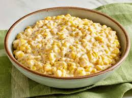

Creamed Corn Recipe

Ingredients:
- 4 cups of fresh or frozen corn kernels (about 4-5 ears of corn)
- 1 cup heavy cream
- 1/2 cup milk (whole milk works best)
- 2 tablespoons butter
- 2 tablespoons all-purpose flour (optional for thickening)
- Salt and pepper to taste
- 1/2 teaspoon sugar (optional, for a little sweetness)
- A pinch of cayenne pepper or paprika (optional, for a little heat or flavor)
- Fresh herbs (like parsley or thyme) for garnish (optional)
Instructions:
- Prepare the Corn: If using fresh corn, remove the husks and silk, then cut the kernels off the cob. If using frozen corn, thaw it out according to the package instructions.
- Make a Roux (Optional): In a medium saucepan over medium heat, melt 2 tablespoons of butter. Stir in the flour (if using) to make a roux, cooking it for about 1-2 minutes until the flour is lightly golden. This helps thicken the cream sauce later.
- Add the Cream and Milk: Gradually pour in the heavy cream and milk, stirring constantly to avoid lumps. Keep stirring until the mixture starts to thicken, which should take about 4-5 minutes.
- Cook the Corn: Add the corn kernels to the saucepan, stirring to combine with the creamy mixture. Let it cook for about 5-7 minutes, allowing the corn to soften and absorb the cream. You can adjust the heat to low so the mixture doesn’t boil too much.
- Seasoning: Stir in salt and pepper to taste. Add a pinch of sugar for sweetness, and cayenne pepper or paprika for a hint of heat if desired.
- Finish and Serve: Once the corn is tender and the sauce is creamy, remove the saucepan from the heat. Garnish with fresh herbs if you like, then serve warm.
Enjoy your creamy, comforting creamed corn! Perfect as a side dish for a variety of meals like roasted meats, mashed potatoes, or cornbread.